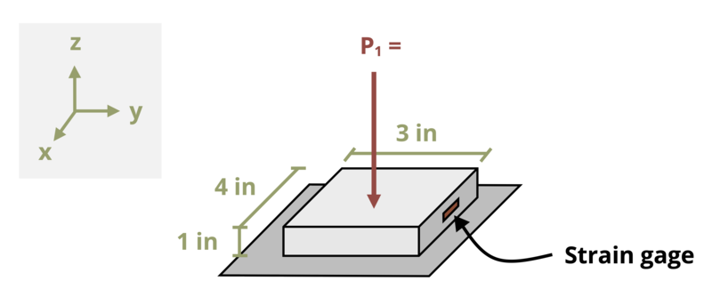

Problem 4.24 - Multiaxial Hooke’s Law

[Problem adapted from © Kurt Gramoll CC BY NC-SA 4.0]#| standalone: true
#| viewerHeight: 600
#| components: [viewer]
from shiny import App, render, ui, reactive
import random
import asyncio
import io
import math
import string
from datetime import datetime
from pathlib import Path
def generate_random_letters(length):
# Generate a random string of letters of specified length
return ''.join(random.choice(string.ascii_lowercase) for _ in range(length))
problem_ID="205"
P1=reactive.Value("__")
E=reactive.Value("__")
v=reactive.Value("__")
SG=reactive.Value("__")
attempts=["Timestamp,Attempt,Answer,Feedback\n"]
app_ui = ui.page_fluid(
#ui.markdown("**Please enter your ID number from your instructor and click to generate your problem**"),
#ui.input_text("ID","", placeholder="Enter ID Number Here"),
#ui.input_action_button("generate_problem", "Generate Problem", class_="btn-primary"),
ui.markdown("**Problem Statement**"),
ui.output_ui("ui_problem_statement"),
ui.input_text("answer","Your Answer in percent", placeholder="Please enter your answer"),
ui.input_action_button("submit", "Check Answer", class_="btn-primary"),
#ui.download_button("download", "Download File to Submit", class_="btn-success"),
)
def server(input, output, session):
# Initialize a counter for attempts
attempt_counter = reactive.Value(0)
@output
@render.ui
def ui_problem_statement():
randomize_vars()
return[ui.markdown(f"A strain gauge is placed on a polymer test sample with an elastic modulus E = {E()} x 10<sup>6</sup> psi and a Poisson's ratio of v = {v()}. When a P<sub>1</sub> = {P1()} kip vertical load is applied to the test sample, the strain gauge reads a strain of ε = {SG()} x 10<sup>-6</sup> in the x-direction. What is the relative error of the strain gauge compared to the theoretical strain of the test sample? Note: relative error is defined to be the difference between the measured value and the theoretical value divided by the theoretical value.")]
#@reactive.Effect
#@reactive.event(input.generate_problem)
def randomize_vars():
random.seed(101)
P1.set(random.randrange(20, 200, 1)/10)
E.set(random.randrange(5, 20, 1))
v.set(random.randrange(20, 40, 1)/100)
SG.set(round((v()*P1()*1000)/(12*E()),1)-(random.randrange(3, 20, 1)/10))
@reactive.Effect
@reactive.event(input.submit)
def _():
attempt_counter.set(attempt_counter() + 1) # Increment the attempt counter on each submission.
sigmaz = (-P1()*1000)/(4*3)
Ex = ((-v()*(sigmaz))/(E()*10**6))
instr= ((Ex - SG()*10**-6)/Ex)*100
if math.isclose(float(input.answer()), instr, rel_tol=0.01):
check = "*Correct*"
correct_indicator = "JL"
else:
check = "*Not Correct.*"
correct_indicator = "JG"
# Generate random parts for the encoded attempt.
random_start = generate_random_letters(4)
random_middle = generate_random_letters(4)
random_end = generate_random_letters(4)
#encoded_attempt = f"{random_start}{problem_ID}-{random_middle}{attempt_counter()}{correct_indicator}-{random_end}{input.ID()}"
# Store the most recent encoded attempt in a reactive value so it persists across submissions
#session.encoded_attempt = reactive.Value(encoded_attempt)
# Append the attempt data to the attempts list without the encoded attempt
attempts.append(f"{datetime.now()}, {attempt_counter()}, {input.answer()}, {check}\n")
# Show feedback to the user.
feedback = ui.markdown(f"Your answer of {input.answer()} is {check}.")
m = ui.modal(
feedback,
title="Feedback",
easy_close=True
)
ui.modal_show(m)
#@render.download(filename=lambda: f"Problem_Log-{problem_ID}-{input.ID()}.csv")
async def download():
# Start the CSV with the encoded attempt (without label)
final_encoded = session.encoded_attempt() if session.encoded_attempt is not None else "No attempts"
yield f"{final_encoded}\n\n"
# Write the header for the remaining CSV data once
yield "Timestamp,Attempt,Answer,Feedback\n"
# Write the attempts data, ensure that the header from the attempts list is not written again
for attempt in attempts[1:]: # Skip the first element which is the header
await asyncio.sleep(0.25) # This delay may not be necessary; adjust as needed
yield attempt
# App installation
app = App(app_ui, server)